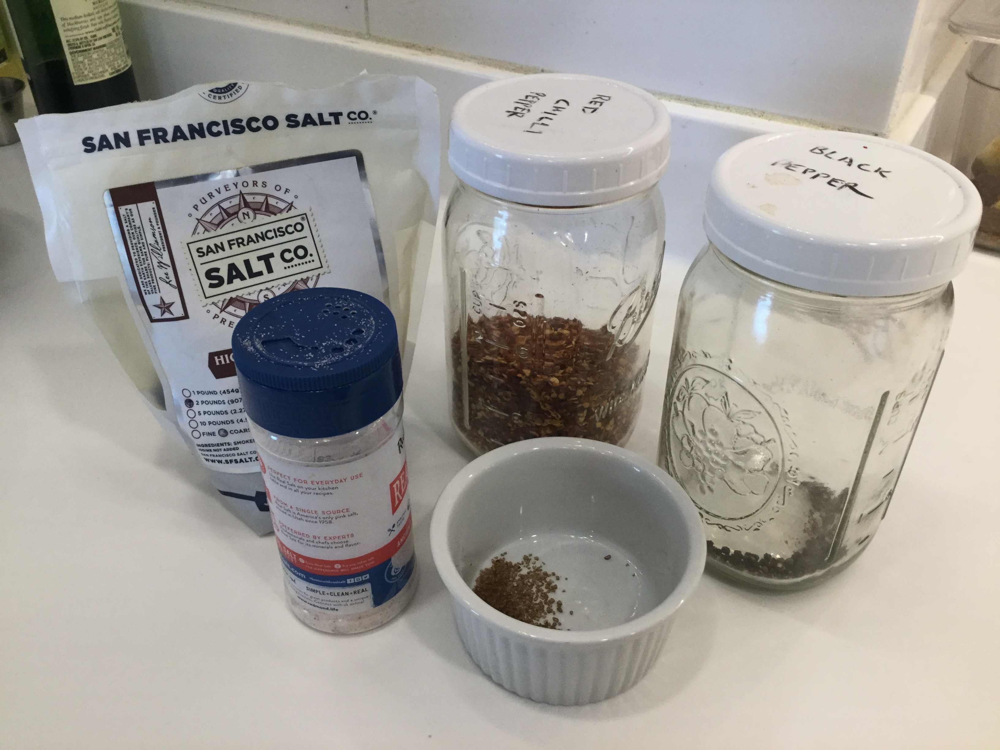
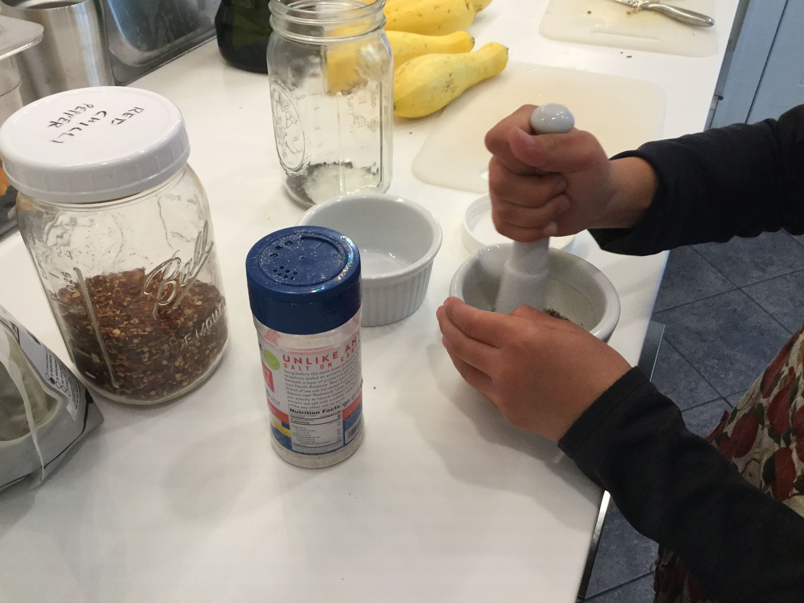
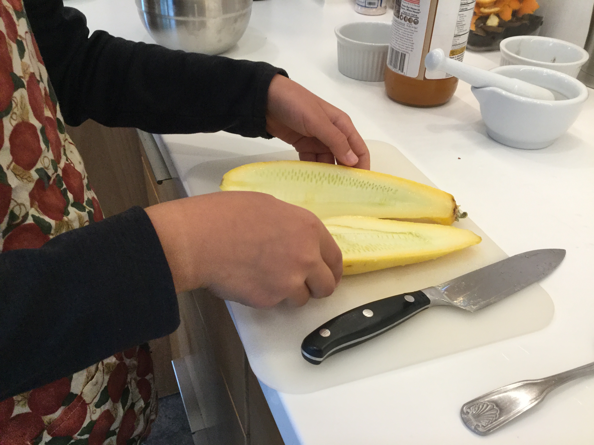
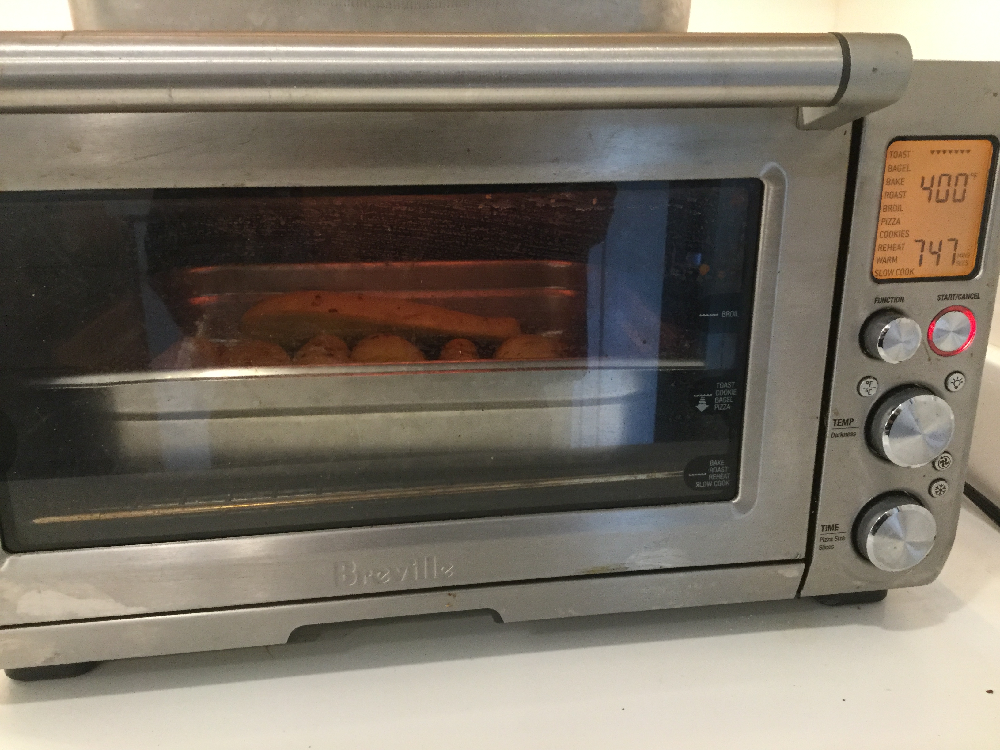

First, pour the olive oil and apple cider vinegar in a small bowl and add the hot pepper, smoked salt, salt, and black pepper.
 Next, cut the summer squashes in half and put them in a large pan. Pour the dressing on top.

Finally, put the squash halves in the oven on bake for 20 minutes or until tender at 400º.
Next up: putting it all together